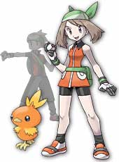
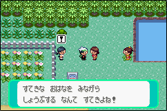
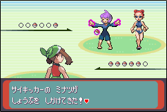
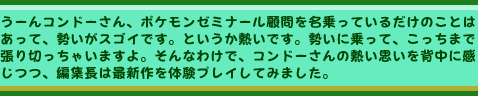
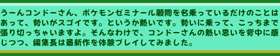

今回も男女から選べる主人公のうち、女の子を選択。
物語の冒頭でミシロタウンに引っ越してくると、お隣さんのオダマキ博士からポケモンのアチャモをもらいました。
例によって３種類のポケモンから選択できるのですが、やっぱりほのおタイプのわざを持つポケモンは序盤に強いのでは…・・・？ などという推測からのチョイス。かわいいアチャモに"モッチャ"と名付けて、いざ冒険開始！
トレーナーの素質を感じさせる戦いっぷりを意識しながら、順調にポケモンを集め、手持ちポケモンを成長させていきます。なかなか調子いいですよ。
ポケモンシリーズは毎回の親切設計が嬉しいところですが、今回も説明書いらずと言えるほど、作りがかなり親切。町の人や、その辺を歩いている人に話しかければ、たいていの疑問は解決してしまいます。
が、ポケモンの体力が弱っている時に話しかけた相手がトレーナーだった場合、問答無用でバトルを挑まれてしまうことがあるので注意！ 森や草むらにいる人は、だいたいトレーナーだと思って間違いありません。
今回は、２人同時に相手をしなくてはならない場面が数多く発生。
しかも、一人だと思って話し掛けたら、後から別のトレーナーが助太刀にくることがあるんです！
一人だと思って油断していると大変！ 弱っている時は困るけど、逆に元気な時なら手応え充分なバトルが期待できます。
ちなみに、繰り出すポケモンの数は、自分も相手側も2匹ずつ。
２対２のダブルバトルは、攻撃の相性や順番を考えつつ進めるので、力まかせではなくいつも以上に慎重なバトルをした方がいいみたい。 |
|  |
|
 
